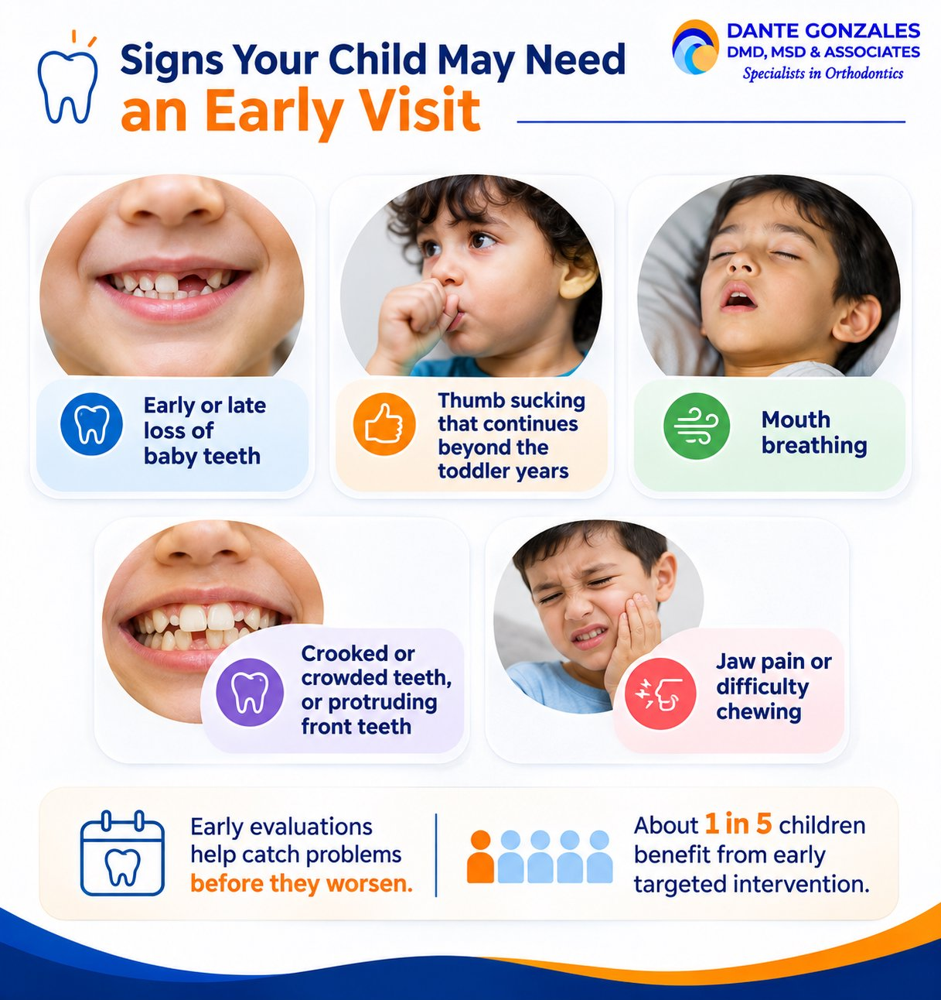

Many parents ask the same question: what is the best age for braces? The answer depends on your child’s teeth, jaw growth, and bite, not just a birthday.
This guide explains the ideal age for braces, why an early orthodontic evaluation matters, and how treatment works for teens and adults.
What Is the Best Age for Braces?
The ideal age for braces is between 10 and 14. Most children begin full braces treatment in this window, though there is no exact age that fits everyone.
Dental eruption status is a key factor in determining readiness for braces. Most orthodontic treatment begins after permanent teeth erupt.
Why Ages 10 to 14 Work Well
Many permanent teeth have erupted by ages 10 to 12, which makes it a common treatment window. Jaw growth is still occurring, which allows easier alignment.
Orthodontists also rely on natural adolescent growth spurts for jaw alignment. Comprehensive alignment remains effective through the teen years.
Other Factors That Play a Role
Emotional and social readiness can affect compliance with orthodontic treatment. A child who wears elastics and cares for braces will see better results.
Braces require diligent oral hygiene to prevent decay and staining. Your orthodontist considers maturity along with the child’s teeth.
When Should Children See an Orthodontist?
Children should see an orthodontist by age 7. The American Association of Orthodontists recommends age seven for the first visit.
What Happens at the First Orthodontic Evaluation
The orthodontist checks the bite, jaw development, and how permanent teeth are coming in. Early orthodontic evaluations help monitor jaw and teeth development.
Most children are monitored after the first visit. Many do not need braces right away.
Signs Your Child May Need an Early Visit
Some signs call for an earlier look:

- Early or late loss of baby teeth
- Thumb sucking that continues past the toddler years
- Mouth breathing
- Crooked or crowded teeth, or protruding front teeth
- Jaw pain or difficulty chewing
Early evaluations help catch problems before they worsen. About 1 in 5 children benefit from early targeted intervention.
Phase 1 Treatment: Early Braces Between Ages 7 and 10
Phase 1 treatment typically occurs between ages 7 and 10. It uses partial braces or appliances to guide jaw growth and create space for adult teeth.
Problems That Need Early Care
Functional or skeletal problems usually require early intervention around ages 8 to 10. Examples include narrow jaws, crossbites, and extra teeth.
Severe crowding and bite problems should be addressed while a child is still growing. Early interceptive treatment can prevent the need for severe measures later.
What Can Wait
Simple cosmetic crowding or spacing can usually wait until ages 11 to 13. Your orthodontist will tell you which category fits your child.
Braces for Teens: Full Treatment in the Teen Years
Braces are most common for kids aged 11 to 14. Many teenagers begin comprehensive treatment once most or all permanent teeth have erupted.
How Long Do Braces Take?
The treatment time for braces typically lasts between 18 to 24 months. Your treatment plan may be shorter or longer depending on the case.
Braces and Clear Aligner Options
Traditional braces use metal brackets and wires. Ceramic braces blend with the teeth, and clear aligners are removable trays for suitable cases.
Common Questions About Braces at Every Age
Is It Okay for a 12 Year Old to Get Braces?
Yes. Age 12 falls inside the most common age range for braces. Most permanent teeth are in, and the jaw is still growing. Your orthodontist will confirm readiness at an orthodontic exam.
Is 25 Too Old for Braces?
No. Adults can get braces at any age. Approximately one in five orthodontic patients is over 21. Adult treatment may take longer due to denser bone structure. Healthy gums and teeth matter more than age.
Benefits of Braces at Any Age
Braces improve oral hygiene by straightening teeth. Straighter teeth are easier to clean. Braces can also reduce the risk of tooth decay and gum disease. The result is a healthy smile and a beautiful smile you feel good about.
Is $7,000 a Lot for Braces?
Braces costs vary by case, location, and treatment type. A fee near $7,000 can fall within the range for comprehensive treatment in some areas. Ask what the fee includes, such as adjustments, retainers, and payment plans. A written estimate after your evaluation is the best way to judge value.
Will My Teeth Move 20 Years After Braces?
Teeth can shift slowly throughout life, even decades after treatment. This is a normal tendency, not a failure of the braces. Wearing your retainer as directed keeps your teeth in place. Ask your orthodontist how often to wear it long term.
Best Age for Braces: Your Next Step
Whether your child is 7, your teen is 13, or you are 35, an orthodontic evaluation is the first step. Early information gives you more choices.
Contact Dr. Dante Gonzales in Dublin or Tracy, CA to schedule an evaluation and explore treatment options.
Frequently Asked Questions
1. What is the ideal age to get braces?
The ideal age for braces is between 10 and 14. Most children begin full treatment in this window because many permanent teeth have erupted while the jaw is still actively growing, allowing more efficient and predictable alignment.
2. Why should my child see an orthodontist by age 7?
The American Association of Orthodontists recommends a first evaluation by age 7. This early checkup allows orthodontists to monitor bite development, check jaw growth, and detect issues like crossbites or severe crowding before they become complex.
3. Is age 12 a good age for braces?
Yes, age 12 falls directly into the peak age range for braces. Most adult teeth have come in and the natural adolescent growth spurt aids in coordinating upper and lower jaw alignment.
4. Is 25 too old to start braces?
No, adults can get braces at any age. Roughly one in five orthodontic patients is an adult over 21. As long as your gums and teeth are healthy, orthodontic correction is fully achievable.
5. Will teeth shift 20 years after braces?
Teeth can shift slowly throughout life due to normal chewing forces and aging. Consistent retainer wear as directed by your orthodontist is essential to keep teeth straight decades after treatment.
Ready to start your smile journey?
Book a complimentary consultation with Dr. Dante Gonzales in Dublin or Tracy, CA. We will review your case and map out a clear, personalised treatment plan.
Request ConsultationQuestions about your orthodontic care? Meet Dr. Dante A. Gonzales, DMD, MSD and our orthodontists, or contact our Dublin or Tracy team for an individual assessment.
This article is for general education and is not a substitute for a professional orthodontic evaluation. Treatment recommendations and outcomes vary from person to person.